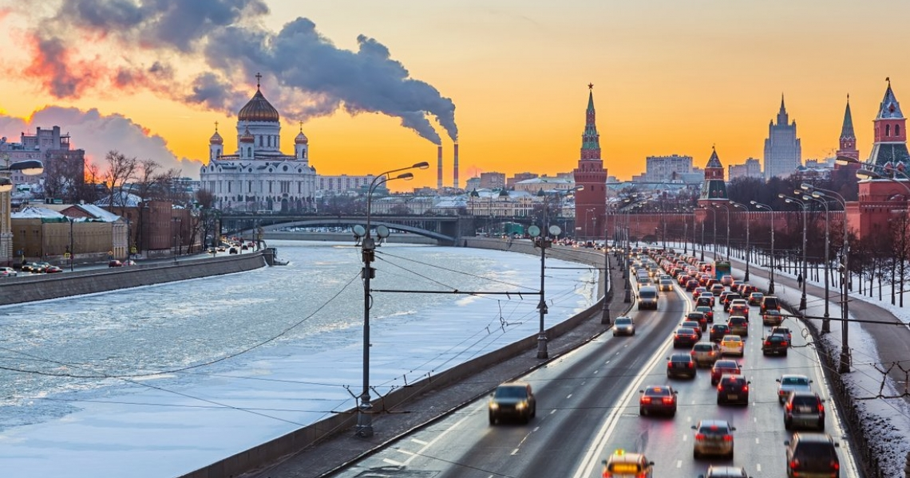
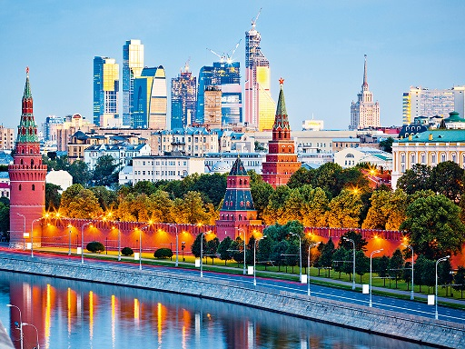
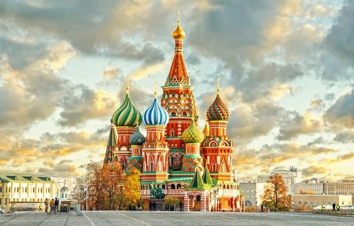
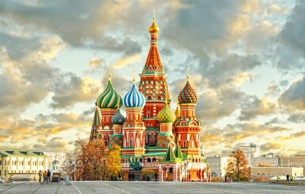
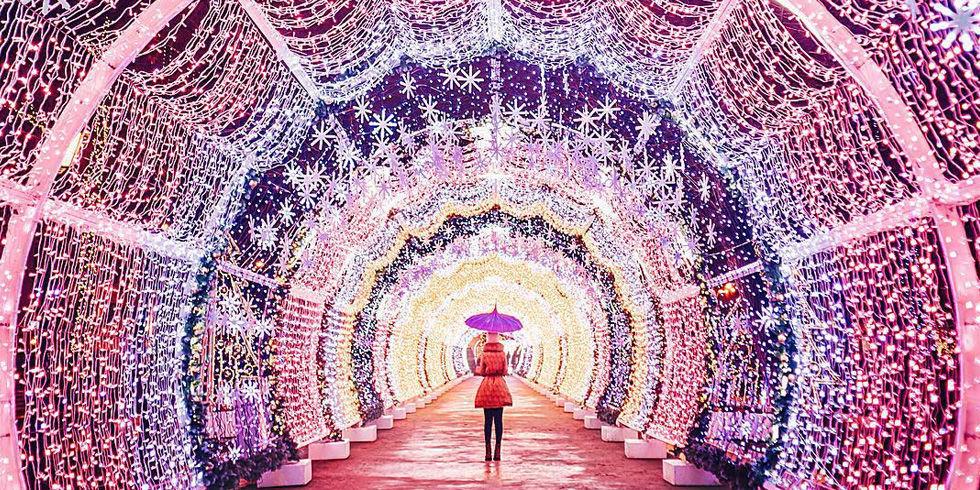
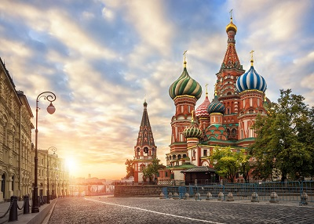
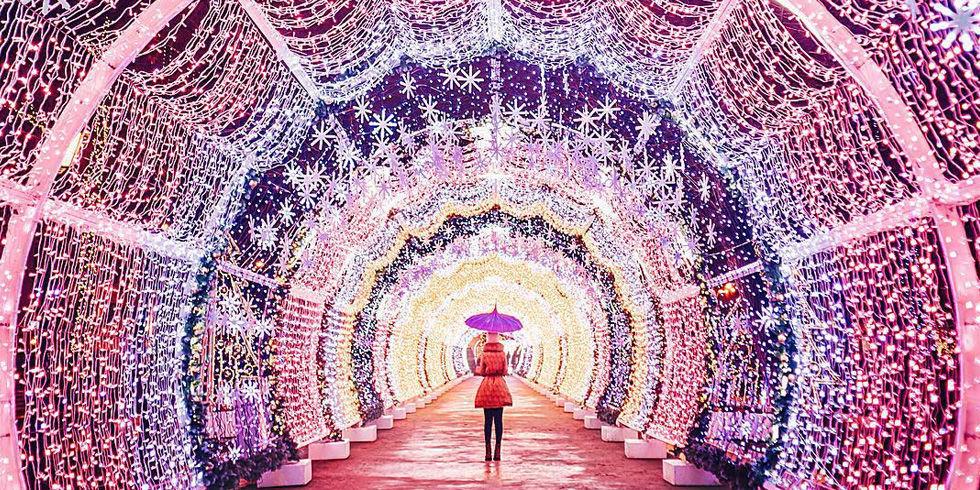
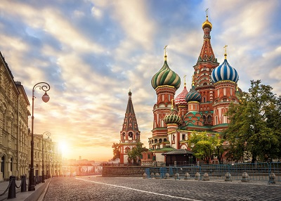

Moscou
Bienvenue à Moscou
Les rayons du soleil se reflètent sur les coupoles dorées des églises. Des femmes court vêtues descendent de voitures luxueuses. Des soldats en uniforme arpentent la place Rouge au pas cadencé.
Vous êtes à Moscou, capitale politique, économique et culturelle de cette immense contrée. Ici, se trouvent les racines médiévales de la Russie : le Kremlin, qui conserve la splendeur des grands princes moscovites, et la cathédrale Basile-le-Bienheureux, témoin de la défaite des Tatars.
La ville rappelle aussi un passé plus récent, encore dans nos mémoires. Sur la place Rouge, le fondateur de l'État soviétique repose momifié pour l'éternité. À quelques kilomètres de là, son héritier, juché sur un tank devant la Maison blanche, provoqua la chute de ce même État. Moscou a toujours été renommée pour la diversité de sa population et la richesse de sa culture. Aujourd'hui plus que jamais, les activités culturelles foisonnent.
Que ce soit un opéra de Tchaïkovski ou une pièce de Tchekhov, les arts de la scène figurent parmi les meilleurs et les moins chers au monde. La galerie Tretiakov et le musée des Beaux-Arts Pouchkine renferment des collections mondialement réputées d'art russe et impressionniste. Avec l'émergence de la Nouvelle Russie sont apparues de nouvelles formes d'art et de distraction. Discothèque underground ou exposition avant-gardiste au musée d'Art moderne, ce côté bohème offre un aperçu de l'avenir du pays : tantôt intellectuel et stimulant, tantôt débauché et dépravé, mais toujours fascinant.
Les lieux à visiter
-
Le Kremlin
Dernier symbole du pouvoir politique russe, cette ancienne forteresse est le berceau de Moscou. On peut y admirer le talent des plus grands peintres d’icônes russes, y découvrir le trésor qui déclencha une révolution, y pleurer un ou deux dirigeants, avant de grimper au sommet du clocher d’Ivan-le-Grand pour admirer un panorama impressionnant. En sortant, ne manquez ni les bouquets des jeunes mariés ni le ballet synchronisé des gardiens de la tombe du Soldat inconnu.
-
La place Rouge
On ne se lasse pas de découvrir la place Rouge. Les tours majestueuses et les murs massifs du Kremlin, Basilele- Bienheureux avec son camaïeu audacieux de couleurs et de motifs, la façade ouvragée du GOuM ainsi que l’auguste musée d’Histoire, tout de briques rouges, bordent cette vaste étendue pavée. La nuit, les édifices illuminés font de la place, enfin paisible, un lieu magique.
-
Shopping à Izmaïlovo
Empruntez la passerelle, passez la porte, et vous voilà transporté au Moyen Âge : églises en bois, murs blanchis… et boutiques de souvenirs. Comme autrefois, les étals autour d’un faux kremlin reconstitué proposent les meilleures affaires : artisanat traditionnel, oeuvres d’art, antiquités, tapis d’Asie centrale ou babioles soviétiques.
-
Le Bolchoï
Après six ans de travaux qui auront coûté la bagatelle de 730 millions de dollars, le théâtre Bolchoï a rouvert ses portes en 2011. Drapée de velours rouge, ornée de nouvelles moulures, la scène principale y a gagné en magnificence. Depuis sa création, en 1824, la salle offre un décor magique à des spectacles exigeants. C’est le lieu de résidence du prestigieux Ballet du Bolchoï.
-
Souzdal
Avec ses canaux, ses prairies fleuries et les dômes de ses églises en forme de meringue, cette capitale médiévale offre un décor de conte de fées. Sous la domination moscovite, Souzdal devint un centre monastique prospère. À la fin du XVIIe siècle, de riches marchands financèrent la construction de 30 ravissantes églises. Classée zone protégée, épargnée lors de la construction du chemin de fer, Souzdal a pu conserver de nombreuses perles architecturales et une atmosphère champêtre.
-
Le métro de Moscou
Le métro de Moscou relève la gageure de cumuler cours d’histoire, musée d’art et efficacité. Depuis son ouverture en 1930, les travaux n’ont pas cessé. La décoration des stations et l’implantation du métro en dit long sur la politique d’urbanisation des XXe et XXIe siècles. Prouesse technologique, le métro moscovite est également richement orné avec une profusion de marbre et de granit, de mosaïques et de bas-reliefs.
-
La galerie Tretiakov
Situé dans Lavrouchinsky per, le plus grand musée d’art de Moscou qui se trouve dans un édifice de style russo-byzantin, abrite une extraordinaire collection d’icônes anciennes ou d’avant-garde (le deuxième bâtiment, situé dans Krymsky val, est consacré aux mouvements du XXe siècle : suprématisme, constructivisme et réalisme socialiste). Célèbre pour sa collection de peintures réalistes, le musée fait aussi la part belle au style russobyzantin et à l’Art nouveau.
-
Les bains Sandouny
Le meilleur moyen d’évacuer le stress urbain, c’est encore de se plonger dans les vapeurs régénératrices d’une bania traditionnelle. Plus qu’un simple lieu d’hygiène, la bania est un art de vivre typiquement russe. Été comme hiver, on en sort merveilleusement propre et détendu. Quelques petits coups de rameau de bouleau bien sentis viendront améliorer votre circulation sanguine. Puisqu’on vous dit que c’est pour votre bien ! Sandouny, le plus vieil établissement de Moscou, est un lieu luxueux, idéal pour s’offrir cette expérience revigorante.
-
Excursions sur la Moskova
Pour admirer la ville depuis un point de vue inédit sans souffrir des embouteillages, rien ne vaut le bateau. La croisière dure 1 heure 30 et vous permettra d’admirer le monastère Novodevitchi, le parc Gorki, la cathédrale du Christ- Sauveur, le Kremlin et le monastère Novospasski. Au-delà de la promenade touristique, le bateau peut aussi être un astucieux moyen de transport.
-
Le musée des
Beaux-Arts PouchkineDepuis plus d’un siècle, le musée Pouchkine rassemble dans ses collections des merveilles qui résument avec brio les beaux-arts depuis l’Antiquité jusqu’à l’ère moderne. Son emplacement originel, devenu depuis le bâtiment central, est consacré à l’Égypte et à la Grèce antiques ainsi qu’aux maîtres flamands. La galerie d’Art européen et américain des XIXe et XXe siècles voisine abrite des chefs-d’oeuvre impressionnistes et néo-impressionnistes.
Découvrez la beauté de Moscou
  



 


